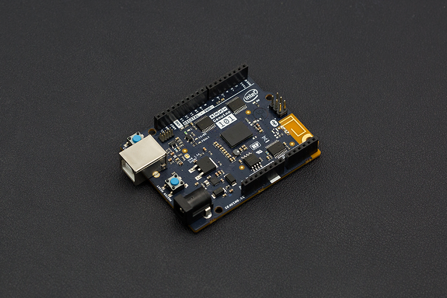

Bitcoin mining has become concentrated in regions with low electricity costs. The network hashrate is so monumental that cutting edge ASIC hardware is needed to get a return on the capital costs of getting into mining. Our concept is simply to use the ultimate source of free energy, and to distribute the work of hashing between a very large number of relatively low hashrate modules.
| Solar energy powers pretty much every living process on the planet. Research into photovoltaics continues to improve solar energy conversion efficiency, currently exceeding 20%, and reaching greater and greater economic viability. There seems to be no better solution to the electricity cost challenges of bitcoin mining than free energy. | Global distribution of low hashrate devices powered by solar energy seems the perfect way to decentralize mining into the community. As the world turns, mining continues in each timezone. We are looking at a consumer device that plugs straight into a standard 12V solar panel and is set up using a smart phone. | The important economic consideration in solar mining is the capital cost of the module required. Production scale of these modules will be a vital part of making the proposition viable. Of course, there are quite a few challenges to address with regard to thermal characteristics and environmental tolerance of such units. |
Our approach is to start simple, and learn as we go...
Our first prototype uses the Arduino/Genuino 101 board. A real bonus is that this board has built-in Bluetooth LE, so gives us a quick start on set up and configuration using a smart phone. Hashing using the Curie microcontroller is slow, unsurprisingly. It clocks in at around 1.5 KH/s, but this only a temporary measure. We are inevitably looking into ASIC hardware and into the design of an ASIC shield which will add more realistic hashing capacity to the unit. We've added on a WiFi101 shield on top to allow the board to work with a remote mining pool server.
Obviously, a mining client isn't much good without a pool server, so we're also building out a pool server. This already connects up to bitcoind instance, and we will soon add web registration and views into pool stats. We've also started on an iterative design for a lightweight mining pool protocol that is appropriate for an extremely high number of client modules.
We are fully open sourcing the work. The current state of the source code can be found here.
The code is still very much in development, but we don't think it will be too long before we can provide installation instructions for the entire setup.
If you want to help out, then please mail us directly. We need the most help in the design of the PCB for the planned ASIC shield, and engineering knowledge to help us figure out overall electronics, weather resistance and thermal characteristics of the module/solar panel system.